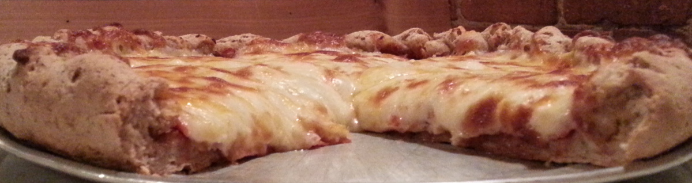

For more than thirty years, The Great Plains Sauce & Dough Company has been producing and serving a pizza product that is unmatched in central Iowa, and from what many of our long-time customers tell us, unmatched anywhere. In a world where most restaurants fail within their first few years, we're proud of our longevity, and if you haven't already treated yourself to a Great Plains pizza, we hope you'll give us a try soon and find out why we're among the seasoned seniors of the restaurant business.

Delivery is available during the evenings starting at 5:00 pm. It typically takes 50-60 minutes, but can occasionally take a bit more or a bit less, depending on how quickly we can produce the order and how many other deliveries there are in the pipeline. We only have two ovens and can only bake so many pizzas at a time. If it's going to take longer than 50-60 minutes, the person taking the order will provide a best estimate at that particular moment in time.
From a thick hearty whole wheat crusted pizza oozing with delicious real cheese to a traditional thin white crusted pizza with a lighter balance of cheese, toppings, and crust, the Great Plains Sauce & Dough Company offers several options for how you want your pizza. We have a selection of six different crust styles, three thick and three thin, with sixteen different toppings to choose from. And a variety of other items to round things out.